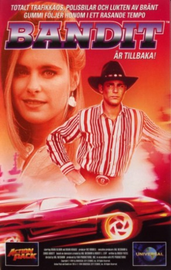

Country:United States, 92 minutes
Spoken languages:
Genres:Comedy, Action
Director(s):Hal Needham
Writer(s):Brock Yates
Video Codec:Unknown
Number: 2545


Certification:PG
Storyline:
Assigned to deliver a prototype car to a press conference for the Governor, things are complicated by a fraudulent Bandit who ends up stealing Bandit's rig AND the prototype. Now Bandit has to find out who's out to ruin his life and recover the car before the Governor's career is crucified by Big Bob on his radio show and while avoiding a determined Sheriff Buford Enright.
Cast:


Medium: Original DVD,
Comments: Part of: Smokey and the Bandit - The 7-movie Outlaw Collection
Loaned: No
Aspect ratio: Unknown